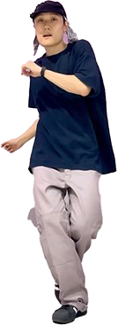
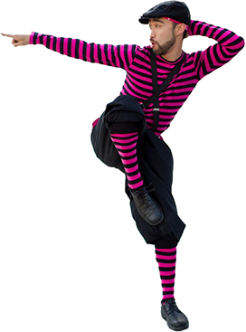
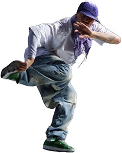

스트릿 댄스는 거리에서 자연스럽게 발생한 춤 문화로, 자유로운 표현과 즉흥적인 움직임이 특징.
다양한 스타일로 구성되어 있으며, 각기 다른 리듬과 감성을 바탕으로 개성을 표현하는 춤이이다.
경쟁보다는 소통과 에너지의 교류를 중시하고 전 세계의 젊은이들 사이에서 문화와 정체성을 공유하는 매개체로 자리잡고 있다.

House
발을 바쁘게 움직이는 풋워크의 자유로운 몸풀이 특징인 클럽 댄스

Locking
몸을 갑자기 멈추는 ‘락’ 동작과 익살스러운 표현이 어우러진 퍼포먼스 중심의 댄스

Hiphop
튕김 있는 바운스를 바탕으로 자유롭고 개성 넘치는 움직임이 특징인 스트릿 댄스의 기본 장르